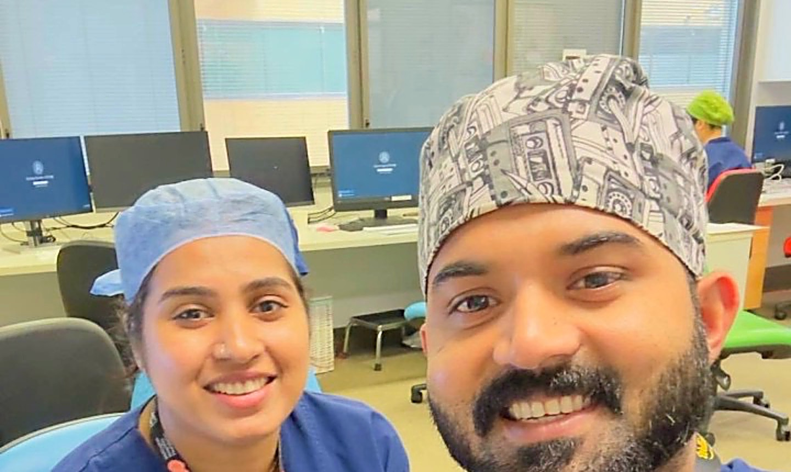

For many couples in healthcare, the hardest part of an international move isn’t one job. It’s two.
Amal and Sandra were working in different countries, Sandra in the NHS and Amal at Cleveland Clinic Abu Dhabi, when they started looking at New Zealand. Both are anaesthetic technicians, and both secured roles in Wellington.
“Sophie was always responsive, honest, and genuinely cared about helping us succeed. Both my wife and I secured positions — giving us the chance to build our careers together and reunite our family.”
Amal
To add: Sandra: why she decided to leave the NHS, and what she worried about.
[Headline in their words]
To add: what it was like to plan a move where both of you need registration and a job, and how it came together.
[Headline in their words]
To add: life in Wellington: the hospital, the team, the city, weekends. A second or third photo would help here, ideally outside work.
[Headline in their words]
To add: what they would tell another couple thinking about it.
Moving as a couple?
If you both work in healthcare, the question is whether both of you can register and find the right roles in the same place. That is something we can help you work out early.